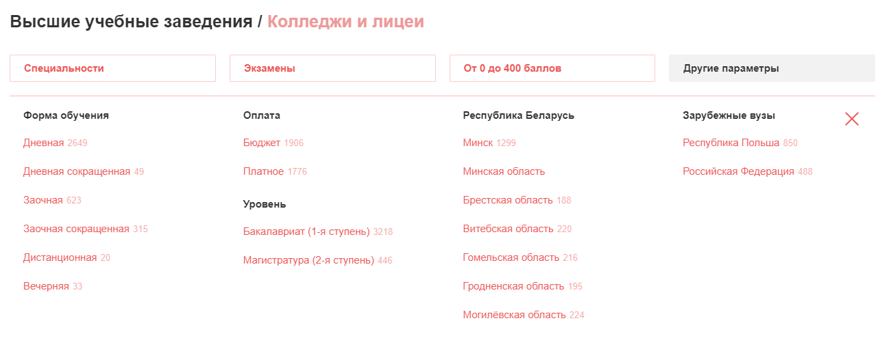
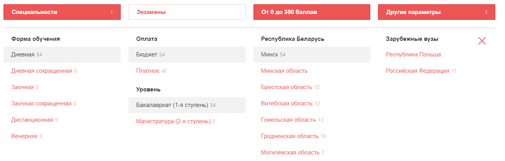
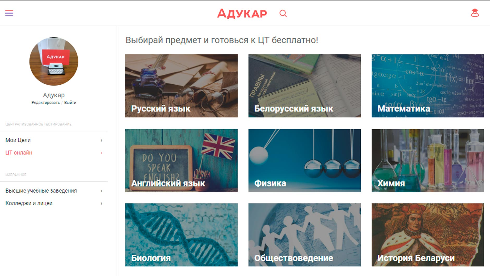
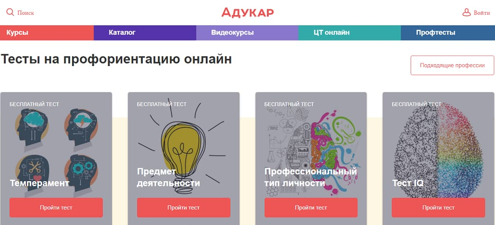

Куда поступать? Где научиться ...? Какую специальность выбрать?
Для ответа на эти и многие другие вопросы, связанные с образованием был создан Adukar. Здесь вы сможете получить ответы на любые свои вопросы, связанные со образованием, пройти курсы по любой специальности, выбрать ВУЗ и многое лругое
Во-первых, Адукар предоставляет курсы от своего образовательного центра
Так, у них вы можете пройти обучение нескольким направлениям:
Во-вторых, Адукар также предллагает список из нескольких сотен учебных заведений. В него попали как ВУЗы, так и ССУЗы
У них на сайте можно подобрать себе ВУЗ или ССУЗ по специальности, баллам, вступительным экзаменм и прочему
Допустим, я хочу поступить в ВУЗ на программирование с проходным баллом ЦТ 350, на дневную форму, бюджет, бакалавриат. Также, допустим, я решаю поступать в Минск
Выставив соответсвующие настройки, я получаю список подходящих мне ВУЗов для дальнейшего анализа
Согласитесь, то такой подход к выбору учебного заведения значительно сокращает время поиска такового
Помимо прочего, на сайте Адукара вы сможете найти разные видеокурсы
Эта часть будет особенно полезно в наши времена ковида, когда нужно оставаться дома
У вас есть возможность поулчить онлайн-подготовку по направлениям:
Также этот раздел может вам предложить бесплатные трансляции, которые не объединены в единый курс, но могут быть вам интересны, если вы увлекаетесь той или иной областью
Тесты
Адукар предоставляет вам возможность самостоятельной подготовки к ЦТ при помощи их системы тестов. Проходя тесты Адукара, вы подготавливаетесь к сдаче, ведь тесты на их сайте очень похожи на реальные тесты ЦТ
Из предыдущего пункта также вытекает то, что вы сможете проверить уровень своей текущей подготовки к сдаче
Профтесты
Если вы желаете пройти тест и узнать свой темперамент, IQ, тип профессиональный тип личности и прочее, то вам прямиком на эту страницу
Профтесты, разработанные Адукаром, поморгут вам лучше познать себя, свою личность и свою профориентацию